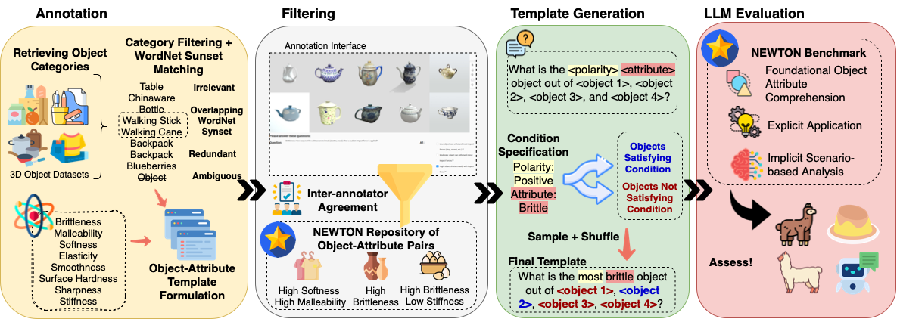
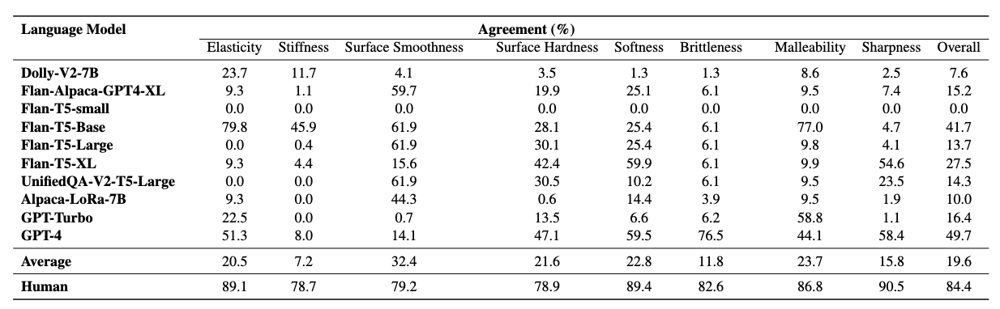
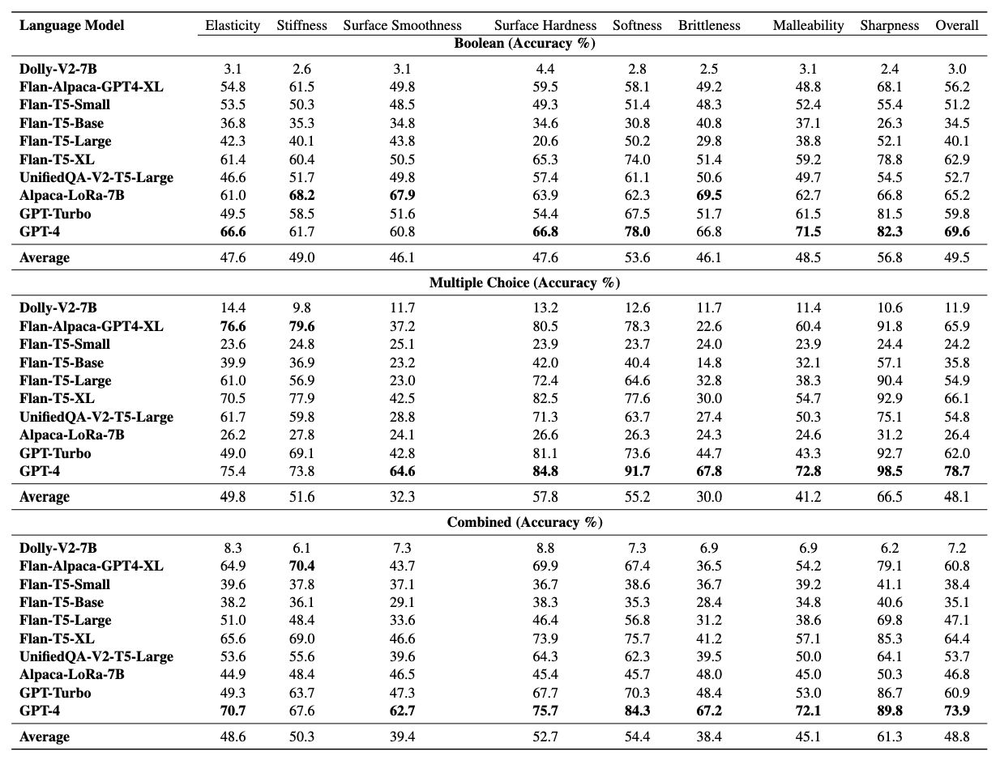
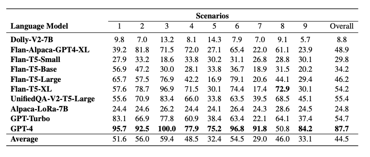
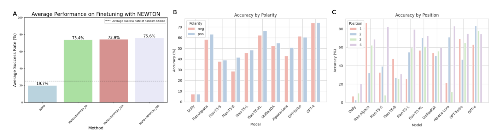

NEWTON
A novel Repository
NEWTON Repository, includes the identification and shortlist of objects and attributes, and obtaining a set of consistent object-attribute annotations.
Templates for generating the three different tracks of QA.

Comparison of NEWTON with other dataset.

Results
Results for Track 1
Results for Track 2
Results for Track 3
Ablation Studies
We provide an analysis of the NEWTON dataset, focusing on potential ways of leveraging \dataset to enhance model performance in a physical reasoning context, and examining the consistency of LLMs with regard to model size, question polarity, and answer positioning.
BibTeX
@article{wang2023newton,
title = {NEWTON: Are Large Language Models Capable of Physical Reasoning?},
author = {Wang, Yi Ru and Duan, Jiafei and Fox, Dieter and Srinivasa, Siddhartha,
booktitle = {arXiv preprint arXiv:2310.07018},
year = {2023},
}